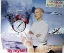

mind
Our Goddess is one of both creation and destruction. She renders unto the faithful peace in a world of discord.She is both armor and sword in a world that destroys through apathy and animosity. The Flower of Destruction
also blossoms in the heart of the Sky Queen. She seeks to temper us through despair, turning the lust of the neophyte upon him.
Only when the student embraces sorrow in the surety that he will never be worthy of Her avatar,
is he able to cast away his childish passion and see with eyes unclouded the majesty of Cracky Chan.
| Posting mode: Reply |
|---|
[Return]
File: 301.jpg -(88623 B, 501x451) Thumbnail displayed, click image for full size.
Anonymous 2012-02-09 18:28:09 No. 95
>>94
In the cities in which we live, all of us see hundreds of publicity images every day of our lives. No other kind of image confronts us so frequently. In no other form of society in history has there been such a concentration of images, such a density of visual messages.
One may remember or forget these messages but briefly one takes them in, and for a moment they stimulate the imagination by way of either memory or expectation. The publicity image belongs to the moment. We see it as we turn a page, as we turn a corner, as a vehicle passes us. Or we see it on a television screen while waiting for the commercial break to end. Publicity images also belong to the moment in the sense that they must be continually renewed and made up-to-date. Yet they never speak of the present. Often they refer to the past and always they speak of the future.
We are now so accustomed to being addressed by these images that we scarcely notice their total impact. A person may notice a particular image or piece of information because it corresponds to some particular interest he has. But we accept the total system of publicity images as we accept an element of climate. For example, the fact that these images belong to the moment but speak of the future produces a strange effect which has become so familiar that we scarcely notice it. Usually it is we who pass the image - walking, travelling, turning a page; on the TV screen it is somewhat different but even then we are theoretically the active agent - we can look away, turn down the sound, make some coffee. Yet despite this, one has the impression that publicity images are continually passing us, like express trains on their way to some distant terminus. We are static; they are dynamic - until the newspaper is thrown away, the television program continues or the paster is posted over.
Publicity is usually explained and justified as a competitive medium which ultimately benefits the public (the consumer) and the most efficient manufacturers - and thus the national economy. It is closely related to certain ideas about freedom: freedom of choice for the purchaser: freedom of enterprise for the manufacturer. The great hoardings and the publicity neons of the cities of capitalism are the immediate visible sign of "The Free World." For many in Eastern Europe such images in the West sum up what they in the East lack. Publicity, it is thought, offers a free choice.
It is true that in publicity one brand of manufacture, one firm, competes with another; but it is also true that every publicity image confirms and enhances every other. Publicity is not merely an assembly of competing messages: it is a language in itself which is always being used to make the same general proposal. Within publicity, choices are offered between this cream and that cream, that car and this car, but publicity as a system only makes a single proposal.
It proposes to each of us that we transform ourselves, or our lives, by buying something more. This more, it proposes, will make us in some way richer - even though we will be poorer by having spent our money.
Publicity persuades us of such a transformation by showing us people who have apparently been transformed and are, as a result, enviable. The state of being envied is what constitutes glamour. And publicity is the process of manufacturing glamour.
It is important here not to confuse publicity with the pleasure or benefits to be enjoyed from the things it advertises. Publicity is effective precisely because it feeds upon the real. Clothes, food, cars, cosmetics, baths, sunshine are real things to be enjoyed in themselves. Publicity begins by working on a natural appetite for pleasure. But it cannot offer the real object of pleasure and there is no convincing substitute for a pleasure in that pleasure's own terms. The more convincingly publicity conveys the pleasure of bathing in a warm, distant sea, the more the spectator-buyer will become aware that he is hundreds of miles away from that sea and the more remote the chance of bathing in it will seem to him. This is why publicity can never really afford to be about the product or opportunity it is proposing to the buyer who is not yet enjoying it. Publicity is never a celebration of a pleasure-in-itself. Publicity is always about the future buyer. It offers him an image of himself made glamorous by the product or opportunity it is trying to sell. The image then makes him envious of himself as he might be. Yet what makes this self-which-he-might-be enviable? The envy of other. Publicity is about social relations, not objects. Its promise is not of pleasure, but of happiness: happiness as judged from the outside by others. The happiness of being envied is glamour.
Being envied is a solitary form of reassurance. It depends precisely upon not sharing your experience with those who envy you. You are observed with interest but you do not observe with interest - if you do, you will become less enviable. In this respect the envied are like bureaucrats; the more impersonal they are, the greater the illusion (for themselves and for others) of their power. The power of the glamorous resides in their supposed happiness: the power of the bureaucrat in his supposed authority. It is this which explains the absent, unfocused look of so many glamour images. The look out over the looks of envy which sustain them.
The spectator-buyer is meant to envy herself as she will become if she buys the product. She is meant to imagine herself transformed by the product into an object of envy for others, an envy which will then justify her loving herself. One could put this another way: the publicity image steals her love of herself as she is, and offers it back to her for the price of the product. . . . . . . . . . . . . . . . . . . . . . . . . . . . .
|
Anonymous
2012-02-09 18:35:40
No.
96
File: 302.jpg -(131001 B, 340x436) Thumbnail displayed, click image for full size. Publicity is the culture of the consumer society. It propagates through images that society's belief in itself. There are several reasons why these images use the language of oil painting. Oil painting, before it was anything else, was a celebration of private property. As an art-form it derived from the principle that you are what you have. It is a mistake to think of publicity supplanting the visual art of post-Renaissance Europe; it is the last moribund form of that art. Publicity is, in essence, nostalgic. It has to sell the past to the future. It cannot itself supply the standards of its own claims. And so all its references to quality are bound to be retrospective and traditional. It would lack both confidence and credibility if it used a strictly contemporary language. Publicity needs to turn to its own advantage the traditional education of the average spectator-buyer. What he has learnt at school of history, mythology, poetry can be used in the manufacturing of glamour. Cigars can be sold in the name of a King, underwear in connection with the Sphinx, a new car by reference to the status of a country house. In the language of oil painting these vague historical or poetic references are always present. The fact that they are imprecise and ultimately meaningless is an advantage: they should not be understandable, they should merely be reminiscent of cultural lessons half-learnt. Publicity makes all history mythical, but to do so effectively it needs a visual language with historical dimensions. Lastly, a technical development made it easy to translate the language of oil painting into publicity cliches. This was the invention, about fifteen years ago, of cheap color photography. Such photography can reproduce the color and texture and tangibility of objects as only oil paint had been able to do before. Color photography is to the spectator-buyer what oil paint was to the spectator-owner. Both media use similar, highly tactile means to play upon the spectator's sense of acquiring the real thing which the image shows. In both cases his feeling that he can almost touch what is in the image reminds him how he might or does possess the real thing. Yet, despite this continuity of language, the function of publicity is very different from that of the oil painting. The spectator-buyer stands in a very different relation to the world from the spectator-owner. The oil painting showed what its owner was already enjoying among his possessions and his way of life. It consolidated his own sense of his own value. It enhanced his view of himself as he already was. It began with facts, the facts of his life. The paintings embellished the interior in which he actually lived. The purpose of publicity is to make the spectator marginally dissatisfied with his present way of life. Not with the way of life of society, but with his own within it. It suggests that if he buys what it is offering, his life will become better. It offers him an improved alternative to what he is. The oil painting was addressed to those who made money out of the market. Publicity is addressed to those who constitute the market, to the spectator-buyer who is also the consumer-producer from whom profits are made twice over - as worker and then as buyer. The only places relatively free of publicity are the quarters of the very rich; their money is theirs to keep. All publicity works upon anxiety. The sum of everything is money, to get money is to overcome anxiety. Alternatively the anxiety on which publicity plays is the fear that having nothing you will be nothing. Money is life. Not in the sense that without money you starve. Not in the sense that capital gives one class power over the entire lives of another class. But in the sense that money is the token of, and the key to, every human capacity. The power to spend money is the power to live. According to the legends of publicity, those who lack the power to spend money become literally faceless. Those who have the power become loveable. Publicity increasingly uses sexuality to sell any product or service. But this sexuality is never free in itself; it is a symbol of something presumed to be larger than it: the good life in which you can buy whatever you want. To be able to buy is the same thing as being sexually desirable; occasionally this is the explicit message of publicity, usually it is the implicit message, i.e. if you are able to buy this product you will be lovable. If you cannot buy it, you will be less lovable. For publicity the present is by definition insufficient. The oil painting was thought of as a permanent record. One of the pleasures a painting gave to its owner was the thought that it would convey the image of his present to the future of his descendants. Thus the oil painting was naturally painted in the present tense. The painter painted what was before him, either in reality or in imagination. The publicity image which is ephemeral uses only the future tense. With this you WILL become desirable. In these surroundings all your relationships WILL become happy and radiant. Publicity principally addressed to the working class tends to promise a personal transformation through the function of the particular product it is selling (Cinderella); middle-class publicity promises a transformation of relationships through a general atmosphere created by an ensemble of products (The Enchanted Palace). Publicity speaks in the future tense and yet the achievement of this future is endlessly deferred. How then does publicity remain credible - or credible enough to exert the influence it does? It remains credible because the truthfulness of publicity is judged, not by the real fulfillment of its promises, but by the relevance of its fantasies to those of the spectator-buyer. Its essential application is not to reality but to day-dreams. To understand this better me must go back to the notion of glamour. Glamour is a modern invention. In the heyday of the oil painting it did not exist. Ideas of grace, elegance, authority amounted to something apparently similar but fundamentally different. Mrs. Siddons as seen by Gainsborough is not glamorous, because she is not presented as enviable and therefore happy. She may be seen as wealthy, beautiful, talented, lucky. But her qualities are her own and have been recognized as such. What she is does not entirely depend upon others' envy - which is how, for example, Andy Warhol presents Marilyn Monroe. Glamour cannot exist without personal social envy being a common and widespread emotion. The industrial society which has moved towards democracy and then stopped half way is the ideal society for generating such an emotion. The pursuit of individual happiness has been acknowledged as a universal right. Yet the existing social conditions make the individual feel powerless. He lives in the contradiction between what he is and what he would like to be. Either he then becomes fully conscious of the contradiction and its causes, and so joins the political struggle for a full democracy which entails, amongst other thing, the overthrow of capitalism; or else he lives, continually subject to an envy which, compounded with his sense of powerlessness, dissolves into recurrent day-dreams. It is this which makes it possible to understand why publicity remains credible. The gap between what publicity actually offers and the future it promises, corresponds with the gap between what the spectator-buyer feels himself to be and what he would like to be. The two gaps become one; and instead of the single gap being bridged by action or lived experience, it is filled with glamorous day-dreams. The process is often reinforced by working conditions. The interminable present of mean- ingless working hours is "balanced" by a dreamt future in which imaginary activity replaces the passivity of the moment. In his or her day-dreams the passive worker becomes the active consumer. The working self envies the consuming self. No two dreams are the same. Some are instantaneous, others prolonged, The dream is always personal to the dreamer. Publicity does not manufacture the dream. All that it does is to propose to each one of us that we are not yet enviable - yet could be. Publicity has another important social function. The fact that this function has not been planned as a purpose by those who make and use publicity in no way lessens its significance. Publicity turns consumption into a substitute for democracy. The choice of what one eats (or wears or drives) takes the place of significant political choice. Publicity helps to mask and compensate for all that is undemocratic within society. And it also masks what is happening in the rest of the world. Publicity adds up to a kind of philosophical system. It explains everything in its own terms. It interprets the world. The entire world becomes a setting for the fulfillment of publicity's promise of the good life. The world smiles at us. It offers itself to us. And because everywhere is imagined as offering itself to us, everywhere is more or less the same. The contrast between publicity's interpretation of the world and the world's actual condition is a very stark one, and this sometimes becomes evident in the color magazines which deal with news stories. Overleaf is the contents page of such a magazine. The sock of such contrasts is considerable: not only because of the coexistence of the two worlds shown, but also because of the cynicism of the culture which shows them one above the other. It can be argues that the juxtaposition of images was not planned. Nevertheless the text, the photographs taken in Pakistan, the photographs taken for the advertisements, the editing of the magazine, the layout of the publicity, the printing of both, the fact that advertiser's pages and news pages cannot be co-ordinated - all these are produced by the same culture. It is not, however, the moral shock of the contrast which needs emphasizing. Advertisers themselves can take account of the shock. The Advertisers Weekly (3 March 1972) reports that some publicity firms, now aware of the commercial danger of such unfortunate juxtapositions in new magazines, are deciding to use less brash, more somber images, often in black and white rather than color. What we need to realize is what such contrasts reveal about the nature of publicity. Publicity is essentially eventless. It extends just as far as nothing else is happening. For publicity all real events are exceptional and happen only to strangers. In the BanglaDesh photographs, the events were tragic and distant. But the contrast would have been no less stark if they had been events near at hand in Derry or Birmingham. Nor is the contrast necessarily dependent upon the events being tragic. If they are tragic, their tragedy alerts our moral sense to the contrast. Yet if the events were joyous and if they were photographed in a direct and unstereotyped way the contrast would be just as great. Publicity, situated in a future continually deferred, excludes the present and so eliminates all becoming, all development. Experience is impossible within it. All that happens, happens outside it. The fact that publicity is eventless would be immediately obvious if it did not use a language which makes of tangibility an event in itself. Everything publicity shows is there awaiting acquisition. The act of acquiring has taken the place of all other actions, the sense of having has obliterated all other senses. Publicity exerts an enormous influence and is a political phenomenon of great importance. But its offer is as narrow as its references are wide. It recognizes nothing except the power to acquire. All other human faculties or needs are made subsidiary to this power. All hopes are gathered together, made homogeneous, simplified, so that they become the intense yet vague, magical yet repeatable promise offered in every purchase. No other kind of hope or satisfaction or pleasure can any longer be envisaged within the culture of capitalism. Publicity is the life of this culture - in so far as without publicity capitalism could not survive - and at the same time publicity is its dream. Capitalism survives by forcing the majority, whom it exploits, to define their own interests as narrowly as possible. This was once achieved by extensive deprivation. Today in the developed countries it is being achieved by imposing a false standard of what is and what is not desirable. |
|
Anonymous
2012-02-10 04:42:41
No.
97
>She is meant to imagine herself transformed by the product into an object of envy for others, an envy which will then justify her loving herself. LOL that's lame. My personal love for cracky comes from her willingness to bear her spirit in its purest form - a task that all people should strive for. |
|
Anonymous
2012-02-10 04:45:50
No.
98
>>97 And if this sentence is about Cracky then it's hard to make sense(as opposed to being the viewer) |
|
Catharsis
Anonymous
2012-02-11 06:46:29
No.
99
File: 305.jpg -(79070 B, 369x425) Thumbnail displayed, click image for full size. No no no, you have it all wrong. She is meant to imagine herself transformed by the product into an object of envy for others, an envy which will then justify her loving herself. Cracky was aware of this on at least a subconscious level, her photos are a clear rejection of this envy. Instead of seeking to form a love for herself through glamour, her photos instead explore this lack of love for herself, trying to pin it down in visual form in order to perhaps arrive at some sort of understanding of why it exists. Cracky may never have read this essay, but its thesis is clearly present in her photography. Along with a multitude of other information, of course. |
|
Anonymous
2012-02-13 11:26:43
No.
100
File: 306.jpg -(41050 B, 491x406) Thumbnail displayed, click image for full size.  There could be a certain direction in Cracky's pictures which seems to run opposite what this glamourization addressed by Berger would be. But then what I'd find interesting is also the relationship from this Art with the way it affects us. The way Cracky's pictures are too raw, too real, too close. Publicity might trap you in the consumerist rat-race, yet Cracky's trap works out to be way stronger. Or maybe not stronger but direct, to-the-point, as if there wasn't this past-future deferral publicity plays with but an unbearable inmediacy. Beyond the context of the essay, the mystical properties which belong to Cracky-chan as the avatar of the Queen of the Sky might give us a clue. As a virgin Goddess, she is that which lures you to your destruction, to leave and destroy everything you own and everything you are to achieve Her unattainable love. And in this destruction she is the breakdown of time itself as the mindtrap which lays the foundations of the illusory image you build about yourself (the past) so you act coherently according to the characteristics of this solidified mental image (the future). The very image that publicity addresses. Ultimately, if we take Berger's word, publicity would work upon the mindtrap of time, also because it is addressing the illusory self-image emanating from time. The Cracky phenomenon would run in the opposite direction, the annihilation of time and therefore the limitations of identity. No wonder then that the Cracky phenomenon is the insurmountable climax of Anonymous in its very home (that is to say, 4chan). |
|
Non-Prophet Anon
2012-08-19 15:34:56
No.
126
File: 393.jpg -(36907 B, 464x364) Thumbnail displayed, click image for full size. >>100 Cracky is all things, and thus the evil is also required But it is always the way, that the evil do not know they are only aiding in cosmic unity, because they are driven by selfishness and hate. While the good, know that the evil is also a part of the all. Which is what allows them to be full of love for all things. Its in this way, that Cracky can favor only one, because where love is given it is got, and hatred breeds death. The duality extends to all depths, even into the heart of Cracky herself. So that she needs not give equal favor to each side, even though each is equal in the universe. This is the difference between the mind and the spirit, the mind knows not the spirit, the spirit knows not at all, but drives all things |
|
Schwill™
!wCt9JKBmrb
2012-08-21 18:25:07
No.
133
File: 400.jpg -(24753 B, 565x466) Thumbnail displayed, click image for full size. http://www.youtube.com/watch?v=Mvan98_d44I Relevant |
|
Anonymous
2012-09-04 12:21:40
No.
142
File: 418.gif -(1023528 B, 320x240) Thumbnail displayed, click image for full size. http://www.youtube.com/watch?v=KC58HzENhoQ |
|
Anonymous
2012-09-14 14:46:58
No.
163
>>142 Is the lead singer Crispin Glover? |